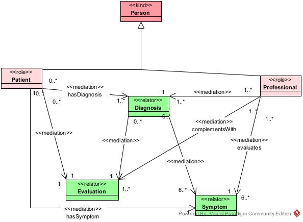
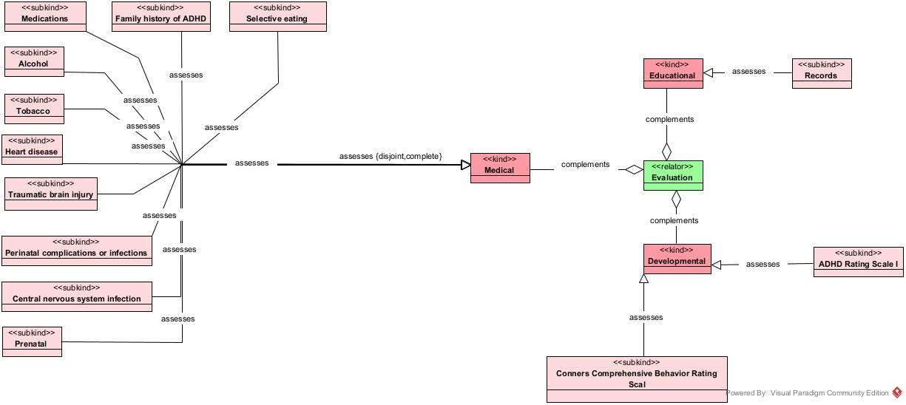
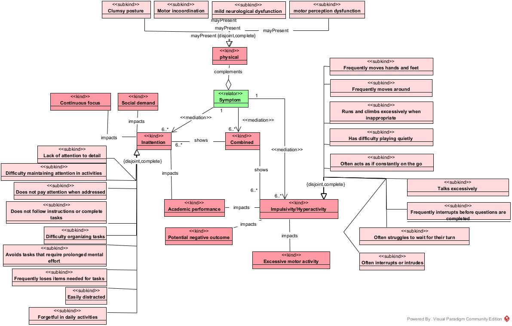

TDHA Ontologia
Ontologias
Ontologias são estruturas formais que descrevem conceitos e suas relações dentro de um domínio específico, permitindo a interoperabilidade entre diferentes sistemas e a padronização do entendimento de informações. No contexto da Web Semântica, as ontologias são fundamentais para dar sentido aos dados e facilitar o processamento automático de informações pela máquina, ajudando a conectar dados que, de outra forma, estariam dispersos. A Web Semântica é a evolução da internet tradicional, permitindo que as informações sejam compreendidas e interpretadas de maneira inteligente pelos computadores, com a ajuda de linguagens e padrões como RDF (Resource Description Framework) e OWL (Web Ontology Language).
OntoUML
OntoUML é uma extensão do padrão UML (Unified Modeling Language), utilizada para modelagem conceitual de sistemas complexos com base em teorias ontológicas formais. Ele é especialmente projetado para representar aspectos da realidade de maneira precisa, seguindo princípios da Ontologia Formal, como a Teoria UFO (Unified Foundational Ontology). OntoUML facilita a criação de modelos mais expressivos, permitindo capturar melhor as nuances e relações entre conceitos.
Tudo foi baseado no DSM-5
Visão aplicada
Visão Diagnóstico (Diagnosis)
A visão de diagnóstico tem como objetivo de demonstrar o que seria o mínimo de um diagnóstico de TDAH. Demonstrando tanto os agentes participantes, paciente e médico, como as suas características, a exemplo, o médico necessita não só dos sintomas como também de avaliações que buscam complementar e aumentar a porcentagem de acerto no diagnóstico.

Visão Avaliação (Evaluation)
A visão de diagnóstico tem como objetivo demonstrar e guiar como o TDAH engloba outras situações na vida do paciente. Que baseado no MSD Manual envolve a analise do contexto escolar, do contexto de desenvolvimento pessoal do paciente como também o contexto clínico.

Visão Sintoma (Symptom)
A visão de sintomas tem como objetivo catalogar todos os princípais sintomas assim como os impactos que esses podem causar nos contexto ao qual o paciente está inserido.
